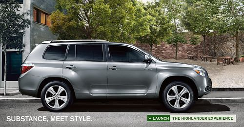

Toyota的杯具 @ Dec 20, 2009
小日本把中国人当SB耍，国产后的Highlander出丑了，12月中旬温州某人驾驶国产2.7排量的汉兰达居然爬不上一个30度的坡道，同行的面包车和CRV都上去了，就剩他的车爬不上去。我觉得那么重那么大的车，2.7排量太小，3.5的应该不成问题，以及四轮的动力分配可能也有问题。
“开车，下坡别在camry前面，上坡别在Highlander后面。”以及现在大家见面不问“您吃了吗？”而是问“今天您爬坡了吗？”丰田公关不久就会开个飞机过来，一到丰田坡就一头栽下来，然后说，这坡连飞机都飞不过去，小车当然是不可能的了。。。。车到山前必有路 有路必有三十度。各个网站Highlander论坛里访客爆多，太有意思了！
据说温州丰田4S店里的销售经理最近也吃不下饭，顾客一来就要将车开到各种坡道上去试，有的甚至还要开到“汉兰达坡”那儿试车。4S店给出的反馈是：“这是城市车，不是专业越野车。”可是拖拉机能上的坡，汉兰达为何上不去？大家都去买拖拉机得了。最近好多车开到“汉兰达坡”那儿去作爬坡测试，浙江平白无故多了一个人文景点了！
丰田公关厉害，全国的媒体除了新华网其它全部封杀消息，真有能力。

-汉兰达坡已经演变为娱乐旅游景点
-爆笑实拍！网友多车测试“汉兰达坡”
-杯具！小面能上丰田汉兰达上不了的小土坡
看看这个视频: 爬90度坡的超牛越野车
6 Responses to “Toyota的杯具”
2009-12-20
总体来说还是车辆设计肯定有缺陷。
我们的SUBARU Forester 比它小不了多少，2.0排量依然跑得很溜嘛。
不过，这一场风波，对于汉兰达来说是“塞翁失马”等着瞧吧，日本人巴不得大家狠狠地骂他们呢。
2009-12-21
这茶博士都没有公关下来，丰田公关还是不行啊。;+)
2009-12-21
我觉得SUBARU Forester 不错，比较低调。茶小姐的推荐很到位。
2009-12-21
哈哈，河南有朋友想提Subaru Forester的话，请和我联系呀。我们公司在郑州有4S店。【注：非商业广告，请勿误会，哈哈】
2009-12-21
心平吧，Highland原本就是城市SUV
Like most crossovers, the Toyota Highlander appeals to consumers who want an SUV image, cargo-carrying versatility and carlike driving characteristics. Think of the Highlander as an elevated, oversize Camry wagon dressed for the great outdoors, and you’ve got the general idea.
所以爬坡并非强项。
斯巴如原本就是军车设计，他的SUV是最好的
两者无可比性
2009-12-21
三菱是日本军工企业好不好，SUBARU原来是造飞机的。
Leave A Reply
存档只读，评论已关闭。